鳶巣土手の桜並木で夜桜
2024/04/05
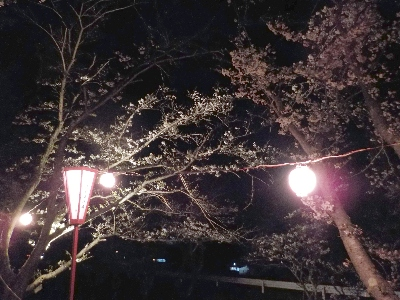
近頃天気が良かったので、そろそろ見頃かと思い桜を見に行きました。でもまだ満開ではありませんでした。
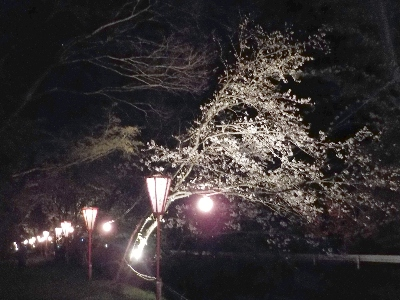
以前より灯りの数がへったかな。
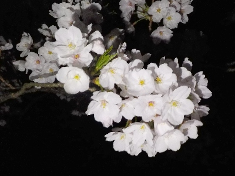
一部満開のところもありました。
島根県出雲市西林木町
2024/04/05

近頃天気が良かったので、そろそろ見頃かと思い桜を見に行きました。でもまだ満開ではありませんでした。

以前より灯りの数がへったかな。

一部満開のところもありました。
2023/03/28
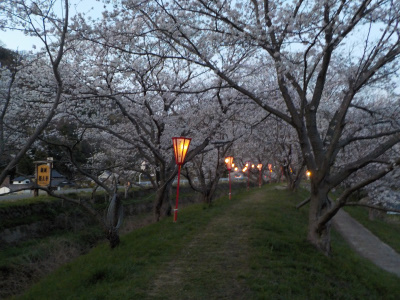
ぼんぼりがあるので夜桜を見に行きました。
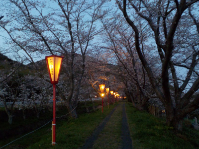
桜が咲いてはいるんですが、まだ満開じゃなかったです。
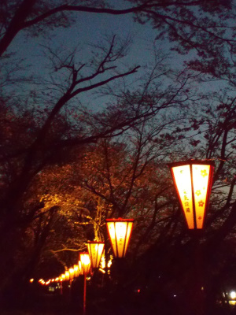
場所によっては暗いので、懐中電灯があった方がいいと思いました。
2023/03/02
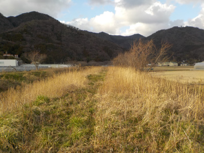
桜の季節じゃないですが、駐車スペースがあって散歩に丁度いいかなと思い行きました。
この場所付近は草が多かったですが、枯草で乾燥していたので特に問題なかったです。
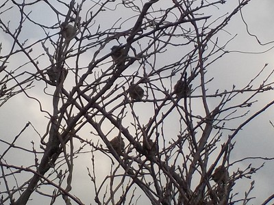
スズメが沢山枝に停まっていました。鴨もいましたが、近づくと飛んで行ったので写真は撮れませんでした。
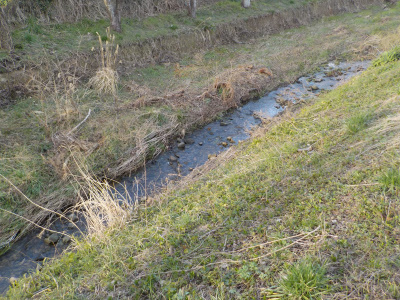
桜の木が多い場所は川の水が少なかったです。小川みたいです。
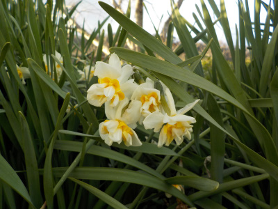
水仙の株が所々で密集して生えていました。増えている感じがするので、そのうち水仙の名所になるかもしれません。
（そんなに都合よくはならないか。）
2022/04/02
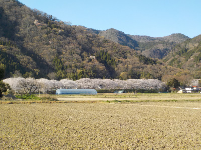
天気がよかったので花見に行きました。
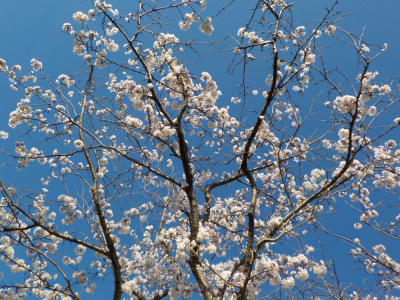
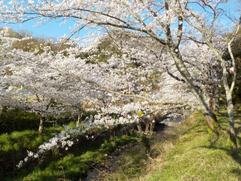
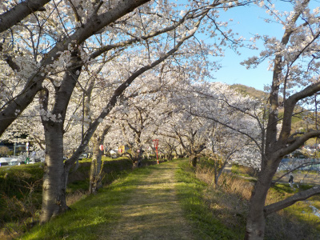
いい休日が過ごせました。
2020/04/09
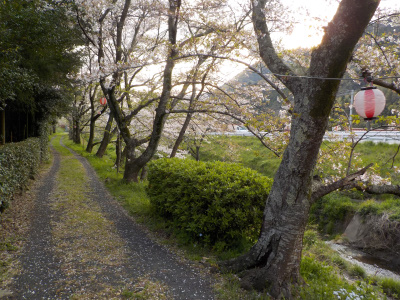
花が少し終わって葉が出ています。
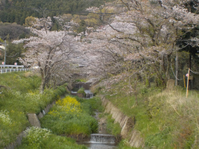
遠目に見るとまだまだピンク色で綺麗でした。
動画だとこんな感じ。
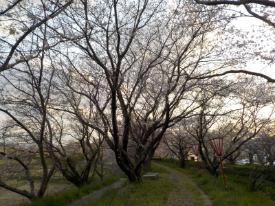
花が咲いているんですが、逆光だと花の撮影ができませんでした。
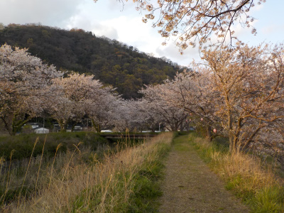
逆光じゃないと花が綺麗に写りました。
夕日に当たってちょっと朱色っぽくなっています。
平日の夕方に散歩して、いい景色が見れました。
2017/05/05
いい気候になったので散歩が気持ちいいです。
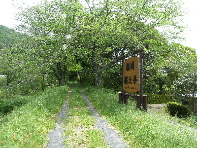
鳶巣の桜土手です。
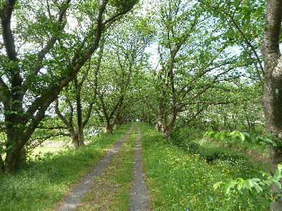
緑いっぱいでのどかですね。
人もいないので、とってもリラックスできました。
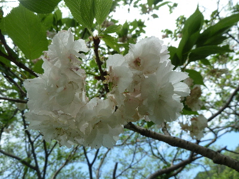
八重の桜が咲いていました。
もう終わり頃ですが、綺麗な花が見れて良かった。
2014/04/06
新川桜土手で花見をしました。
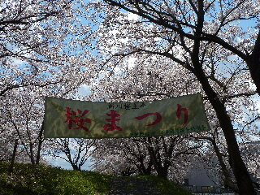
天気が良かったので、桜がとっても綺麗でした。
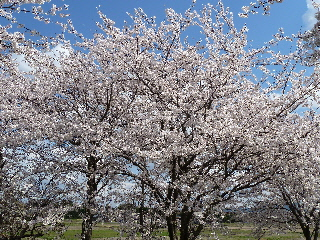
青い空と桜の花の色はよく合いますね。
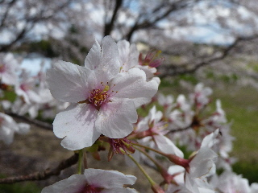
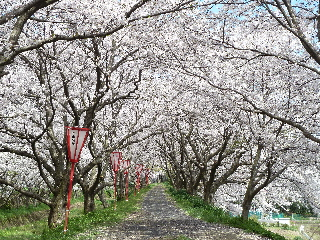
桜のトンネルをのんびり散歩です。
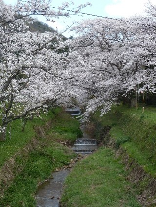
谷川沿いの土手に桜並木があるので、とってものどかでした。
2012/03/24
日当たりで、風の少なそう場所だったら
ひょっとして一輪くらい咲いてないかなって思って探してみたんですが、全然まだでした。
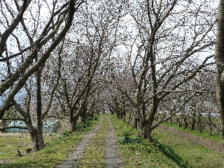
蕾が固そうだったので、まだまだ先ですね。
2010/4/4
天気も良くてお花見日和でした。
ちょっと遠くから見た写真です。
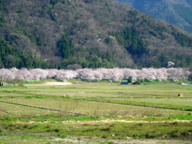
こっちから見るとのどかでいい景色ですね。
桜並木の入り口付近からの写真です。
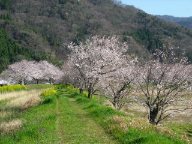
綺麗ですね。
桜のトンネルです。わりと長いです。
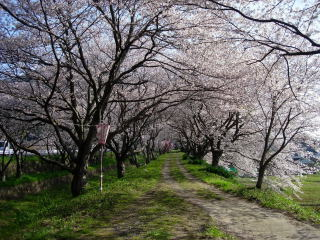
朝行ったんですが、人が少なかったのでのんびり花見が出来ました。
道路の脇に少し駐車スペースがありますが、ちゃんとした駐車場がないのであまり人が来ないのかもしれません。
2010/3/21
今日は風が強くて少し寒かったです。
鳶巣の荒川桜土手はまだ花がほとんど咲いていませんでした。
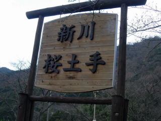
でもちょっと咲いてました。
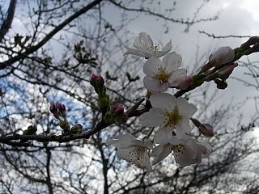
次の土日は見頃じゃないかと思います。